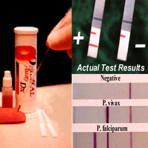

Although the peripheral blood smear examination that provides the most comprehensive information on a single test format has been the “gold standard” for the diagnosis of malaria, the immunochromatographic tests for the detection of malaria antigens, developed in the past decade, have opened a new and exciting avenue in malaria diagnosis. However, their role in the management and control of malaria appears to be limited at present.
Immunochromatographic Tests for Malaria Antigens
Immunochromatographic tests are based on the capture of the parasite antigens from the peripheral blood using either monoclonal or polyclonal antibodies against the parasite antigen targets. Currently, immunochromatographic tests can target the histidine-rich protein 2 of P. falciparum, a pan-malarial Plasmodium aldolase, and the parasite specific lactate dehydrogenase. These RDTs do not require a laboratory, electricity, or any special equipment.
Histidine-rich protein 2 of P. falciparum (PfHRP2) is a water soluble protein that is produced by the asexual stages and gametocytes of P. falciparum, expressed on the red cell membrane surface, and shown to remain in the blood for at least 28 days after the initiation of antimalarial therapy. Several RDTs targeting PfHRP2 have been developed.
Plasmodium aldolase is an enzyme of the parasite glycolytic pathway expressed by the blood stages of P. falciparum as well as the non-fa1ciparum malaria parasites. Monoclonal antibodies against Plasmodium aldolase are pan-specific in their reaction and have been used in a combined ‘P.f/P.v’ immunochromatographic test that targets the pan malarial antigen (PMA) along with PfHRP2.
Parasite lactate dehydrogenase (pLDH) is a soluble glycolytic enzyme produced by the asexual and sexual stages of the live parasites and it is present in and released from the parasite infected erythrocytes. It has been found in all 4 human malaria species, and different isomers of pLDH for each of the 4 species exist. With pLDH as the target, a quantitative immunocapture assay, a qualitative immunochromatographic dipstick assay using monoclonal antibodies, an immunodot assay, and a dipstick assay using polyclonal antibodies have been developed.
{kind=link}
RDT Test Format
The Rapid Malaria Tests: The RDTs have been developed in different test formats like the dipstick, strip, card, pad, well, or cassette; and the latter has provided a more satisfactory device for safety and manipulation. The test procedure varies between the test kits. In general, the blood specimen (2 to 50µL) is either a finger-prick blood specimen, anticoagulated blood, or plasma, and it is mixed with a buffer solution that contains a hemolyzing compound and a specific antibody that is labeled with a visually detectable marker such as colloidal gold. In some kits, labeled antibody is pre-deposited during manufacture and only a lysing/washing buffer is added. If the target antigen is present in the blood, a labeled antigen/antibody complex is formed and it migrates up the test strip to be captured by the pre-deposited capture antibodies specific against the antigens and against the labeled antibody (as a procedural control). A washing buffer is then added to remove the hemoglobin and permit visualization of any colored lines formed by the immobilized antigen-antibody complexes. The pLDH test is formatted to detect a parasitemia of >100 to 200 parasites/µL and some of the PfHRP2 tests are said to detect asexual parasitemia of >40 parasites/µL.
The PfHRP2 test strips have 2 lines, I for the control and the other for the PfHRP2 antigen. The PfHRP2/PMA test strips and the pLDH test strips have 3 lines, 1 for control, and the other 2 for P. falciparum (PfHRP2 or pLDH specific for P. falciparum) and non-falciparum antigens (PMA or pan specific pLDH), respectively. Change of color on the control line is necessary to validate the test and its non-appearance, with or without color changes on the test lines, invalidates the test. With color change only on the control line and without color change on the other lines, the test is interpreted as negative. With the PfHRP2 test, color change on both the lines is interpreted as a positive test for P. falciparum malaria. With the PfHRP2/PMA [The immuno chromatographic test (ICT Malaria P. f. /P.v.test)] and the pLDH tests, color change on the control line and the pan specific line indicates non-fa1ciparum infection and color change on all the 3 lines indicates the presence of P. falciparum infection, either as monoinfection or as a mixed infection with nonfa1ciparum species. Also, if the PfHRP2 line is visible when the PMA line is not, the test is interpreted as positive forP.falciparum infection. Mixed infections of P. falciparum with the non-falciparum species cannot be differentiated from pure P. falciparum infections. However, with regard to the pLDH test, it is claimed that in the presence of P. vivax infection, the genus specific line is much darker and more intense than the species specific line due to the presence of all the stages of the parasite in the blood.
{kind=link}
It is also claimed that the rapid diagnostic tests can be performed by individuals with minimal training. With the different tests that are currently available, the procedure may involve 2 to 6 steps and take 5 to 30 minutes. The cost of the RDT also varies from test to test and from country to country, ranging from US $1.20 to $13.50 per test.
Problems with RDTs:
Cross-reactions with autoantibodies: Studies have reported cross reactivity of the various RDTs with autoantibodies such as rheumatoid factor, resulting in false positive tests for malaria. Studies in patients with positive rheumatoid factor have shown that the false positive reactions are higher with the PfHRP2 tests using IgG capture antibody (16.5% to 83% ) compared to the PfHRP2 tests using IgM antibodies (6.6%) and the pLDH test (3.3%). Cross reactivity of the PMA antibody with rheumatoid factor does not appear to occur.
Sensitivity: RDTs for the diagnosis of P. falciparum malaria generally achieve a sensitivity of >90% at densities above 100 parasites per µL blood and the sensitivity decreases markedly below that level of parasite density. Many studies have achieved >95% sensitivity at parasitemia of ~500 parasites/µL, but this high parasitemia is seen in only a minority of patients. For the diagnosis of P. vivax malaria, the PfHRP2/PMA test has a lower sensitivity compared to that for P. falciparum malaria; however, the pLDH test has an equal or better sensitivity for P. vivax malaria compared to P. falciparum malaria. For the diagnosis of P. malariae and P. ovale infections, the sensitivity is lower than that of P. falciparum malaria at all levels of parasitemia on both the PfHRP2/PMA and the pLDH tests. The specificity appears to be better with the pLDH test than the PfHRP2/PMA test for both P. falciparum and non-falciparum malaria.
The sensitivity of the RDTs at low levels of parasitemia and for non-immune populations remains a problem. Compared to microscopy, the PfHRP2/PMA tests were found to be less sensitive in detecting asymptomatic patients, particularly at low parasitemias. The sensitivity of the pLDH test in field studies was also found to be lower at low parasitemias in field studies. The comparisons between the PfHRP2/PMA test and the pLDH test in field studies have yielded variable results, but the pLDH tests were found to have a better specificity for P. vivax. In one study, PfHRP2, PfHRP2/PMA, and pLDH tests had a sensitivity of <75% at parasitemias of <1,000/m L. Of concern is the fact that in nonimmune individuals, symptomatic malaria can occur at parasite densities that are below the detection threshold of currently available RDTS. In a cross-sectional malaria survey, 84.1% patients with P. falciparum infection had a parasitemia of <500/µL and the sensitivity of the PfHRP2 test was only 23.3% at this level of parasitemia. The level of parasitemia encountered in P. vivax infection rarely exceeds 1% (50,000/µL) and usually is much lower. The level of parasitemia forP. malariae and P. ovale are lower than for P. vivax, and the affinity of the panspecific antibodies for these parasites is also lower. Lower levels of parasitemia are also common in nonimmune patients treated with antimalarial chemoprophylaxis. This would mean that P. falciparum infections with low levels of parasitemia and a significant proportion of symptomatic, non-immune patients with P. vivax (or other non-falciparum) malaria may be missed by the RDTs.
Further, the RDTs have been reported to give false negative results even at higher levels of parasitemia. Therefore, in cases of suspected severe malaria or complex health emergencies, a positive result may be confirmatory but a negative result may not rule out malaria. Further, a negative RDT result should always be confirmed by microscopy. It should be emphasized that P. falciparum malaria, a potentially lethal disease, must not be missed because of a false-negative dipstick test. It has been suggested that in such cases, 1 in 10 dilution of a negative sample with 0.9% sodium chloride may help to exclude the prozone phenomenon.
False Positivity: False positive tests can occur with RDTs for many reasons. Potential causes for PfHRP2 positivity, other than gametocytemia, include persistent viableasexual-stage parasitemia below the detection limit of microscopy (possibly due to drug resistance),persistence of antigens due to sequestration and incomplete treatment, delayed clearance of circulating antigen (free or in antigen-antibody complexes) and cross reaction with non-falciparum malaria or rheumatoid factor. Proportion of persistent positivity has been linked to the sensitivity of the test, type of test, degree of parasitemiaand possibly the type of capture antibody.
False negativity: On the other hand, false negative tests have been observed even in severe malaria with parasitemias >40000 parasites/µl. This has been attributed to possible genetic heterogeneity of PfHRP2 expression, deletion of HRP-2 gene, presence of blocking antibodies for PfHRP2 antigen or immune-complex formation, prozone phenomenon at high antigenemia or to unknown causes.
Cross reactions between Plasmodia species and problems in identifying non-falciparum species: Cross reaction of PfHRP2 with non-falciparum malaria could give false positive results for P. falciparum and mixed infections containing asexual stages of P. falciparum could be interpreted as negative in about one third of the patients.
Another major difficulty still encountered by the use of RDTs is the correct identification of Plasmodium species, particularly in areas where nonfalciparum malaria is prevalent. The PfHRP2 tests can detect only P. falciparum infection and would miss the more common non-falciparum malaria in areas where other Plasmodium species are co-endemic.
Multiple Influences: The performance of the RDTs is reported to be influenced by a multitude of factors like the type of the parasite and the level of parasitemia; the type of test; the target antigen and the capture antibody; the expression of the target antigens on the parasites and the presence of several isomers; the presence of gametocytemia; persistent antigenemia or sequestration of the parasites; cross-reactions with other malaria species and with autoantibodies; batch quality variations in test strips; prozone phenomenon; and prior treatment. The interpretation of the color changes to identify the malaria infection is influenced by the level of training, the type of instructions, and in case of self-use, by the state of the patient. The inability to quantify and differentiate between the sexual and asexual parasitemia could pose problems in the areas of high transmission and in cases of incomplete treatment.
The sensitivity and specificity of the RDTs, and hence the diagnosis and treatment of malaria based on the RDTs, are influenced by the positive results due to causes other than malaria antigenemia, and the negative results due to causes other than low parasitemia. Therefore, the identification of the color changes on the RDT strips may look simple but the interpretation of the result would require the knowledge of the malarial dynamics and of the possible errors with the RDTs. Otherwise, the RDTs may raise more questions than answers, and the insufficient accuracy of the RDTs could increase the number of incorrect malaria diagnoses.
Persistence of antigens: All the antigens targeted by the RDTs are expressed by the asexual as well as the sexual forms of the parasites and persistent antigenemia can cause positive tests on RDTs up to one month. With the schizonticidal drugs having no effect on the gametocytes of P.falciparum (except for the artemisinin compounds), RDTs may not be reliable tools to predict the therapeutic response.
Interpretation: Although the RDTs have been reported to be useful and easy tools for field surveys in remote forests and villages, some studies have found that the experience and the level of training of the field staff can influence the sensitivity and specificity of these tests and have reported questionable results or failure to interpret the results in 1.7% to 3.75% of the PfHRP2/PMA test strips.
Lower sensitivity in detecting asymptomatic patients, large numbers of positive tests due to persistent antigenemia following incomplete treatment, inability to differentiate the mixed infections and the non-falciparum species, and inability to differentiate between the various stages of the parasite limit the value of the RDTs in active surveillance in the field. The cost of the RDTs has also been considered as a major obstacle for their large scale use in field studies.
The RDTs have been evaluated for the diagnosis of malaria in travelers, as self-use kits and at the laboratories. Studies on self-use by travelers have raised doubts over the reliability of interpretation of the RDTs by travelers. In one study, only 68% of the European tourists to Kenya were able to perform the test correctly, and 10 out of 11 with malaria failed to diagnose themselves correctly. High number of false negative results have also been reported.
| Comparison of Rapid Diagnostic Tests for Malaria Antigens | |||
| PfHRP2 tests | PfHRP2 and PMA test | pLDH test | |
| Target antigen | Histidine rich protein 2 of P. falciparum,water soluble protein expressed on RBC membrane | Pan-specific Plasmodium aldolase. parasite glycolytic enzyme produced by all species and PfHRP2 | Parasite lactate dehydrogenase. parasite glycolytic enzyme produced by all species |
| General test format | 2 lines | 3 lines | 3 lines |
| Capability | Detects P. falciparum only | Can detect all 4 species | Can detect all 4 species |
| Non-falciparum species | Not detected | Detected; differentiation between the 3 not possible | Detected; differentiation between the 3 not possible |
| Mixed infections of P.falciparum with non-falciparum species | Appear as P. falciparum; differentiation not possible | Appear as P. falciparum; differentiation not possible | Appear as P. falciparum; differentiation not possible |
| Detection limit | >40-100 parasites/µL | Higher for P. vivax and other non-falciparum species | > 100-200 parasites/µL for P. falciparum andP. vivax; may be higher for P. malariae andP. ovale |
| Post-treatment persistence of antigens | Reported up to 31 days | Reported; longer for pan specific antigenemia than for PfHRP2 | Reported up to 1 -3 weeks |
| Cross-reactivity between malarial species | Reported | Reported | Reported |
| Cross-reactivity with auto antibodies | Reported, high (up to 83% with rheumatoid factor) | Not known | Reported. low (3.3% with rheumatoid factor) |
| Indication of viability of parasites | No | No | Positive test indicates presence of viable parasitemia |
| Comparison of Peripheral Blood Smear Examination and RDTs for Malaria | ||
| Peripheral Smear | Rapid Diagnostic Tests | |
| Format | Slides with blood smear | Test strip |
| Equipment | Microscope | Kit only |
| Training | Trained microscopist | ‘Anyone with a little training’ |
| Test duration | 20-60 minutes or more | 5-30 minutes |
| Test result | Direct visualization of the parasites | Color changes on antibody coated lines |
| Capability | Detects and differentiates all plasmodia at different stages | Detects malaria antigens (PfHRP2/ PMA/pLDH) from asexual and/or sexual forms of the parasite |
| Detection threshold | 5-10 parasites/µL of blood | 1 00-500/µL for P. falciparum, higher for non-falciparum |
| Species differentiation | Possible | Cannot differentiate among non-falciparum species; mixed infections of P.falciparum and non-falciparum appear as P. falciparum |
| Quantification | Possible | Not possible |
| Differentiation between sexual and asexual stages | Possible | Not possible |
| Disadvantages | Availability of equipment and skilled microscopists, particularly at remote areas and odd hours | Unpredictable efficiency at low and very high parasitemia; cross reactions among plasmodial species and with auto-antibodies; persistence of antigens |
| Status | Gold standard | Not yet approved by the FDA |
| Cost per test | US$ 0.12-0.40 | US$ 1 .20-13.50 |
A potential problem with the dipstick test is that the circulating antigen will be detectable for many days even after the elimination of viable P. falciparum from the blood stream. A positive test therefore may not always indicate an active infection.
US FDA approves RDT: On June 13, 2007, the U.S. Food and Drug Administration (FDA) approved the first RDT for use in the United States. This RDT is approved for use by hospital and commercial laboratories, not by individual clinicians or by patients themselves. It is recommended that all RDTs are followed-up with microscopy to confirm the results and if positive, to quantify the proportion of red blood cells that are infected